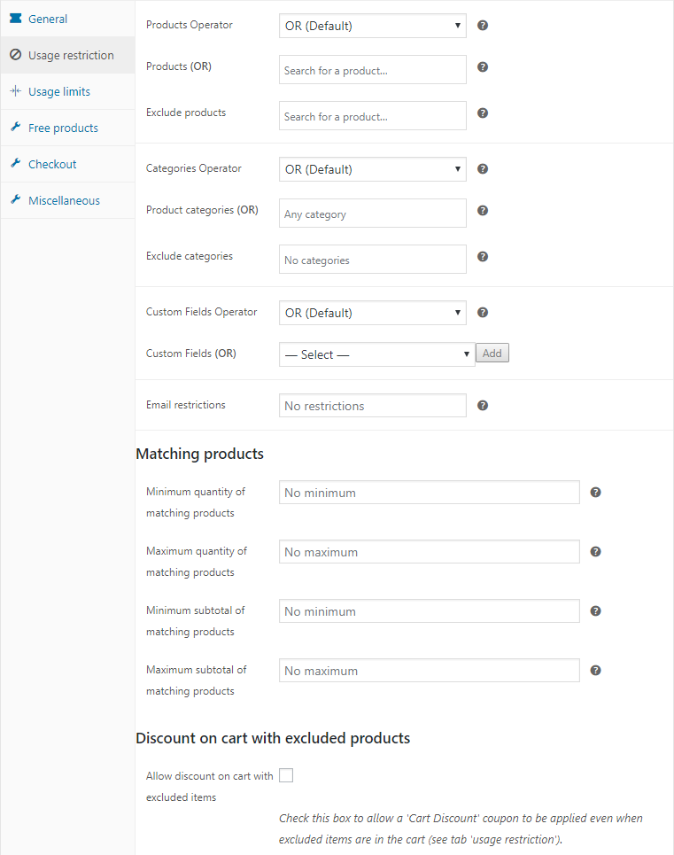
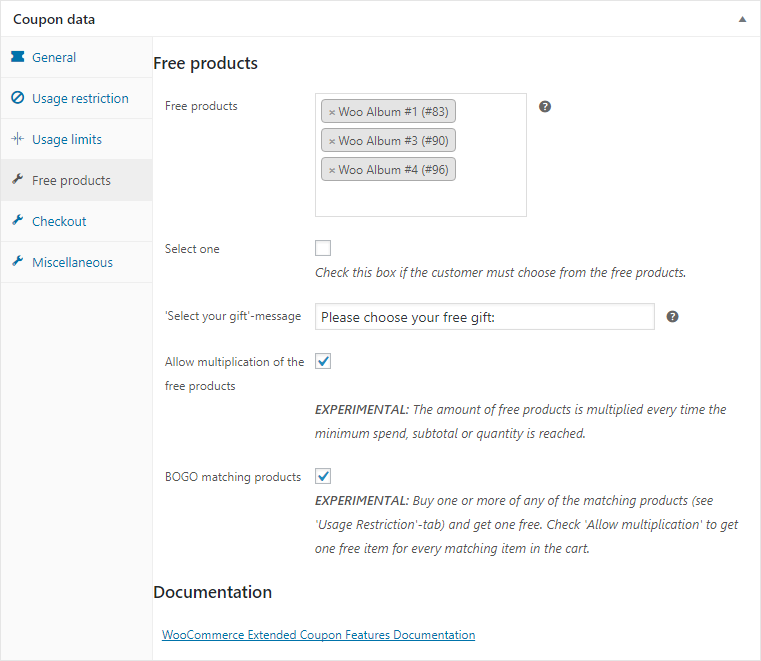
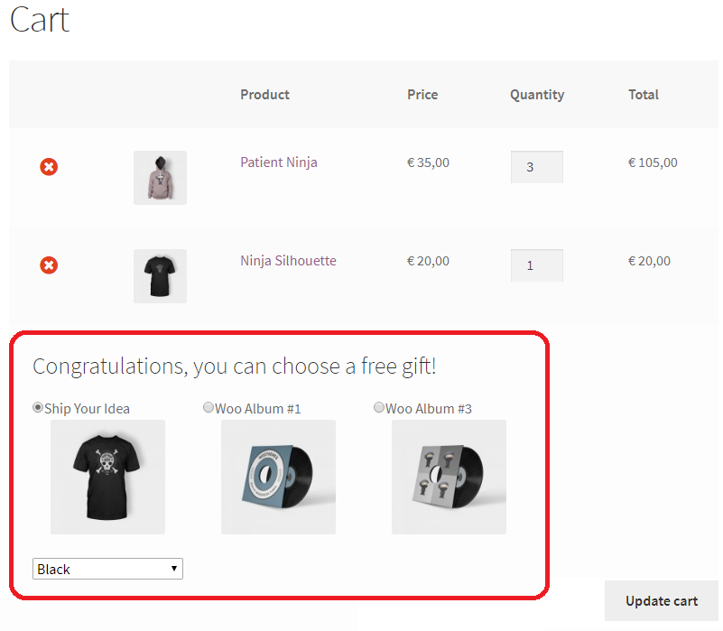
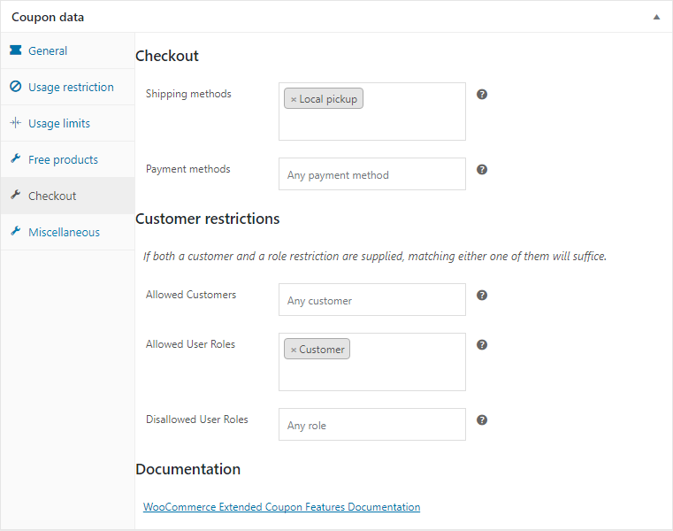
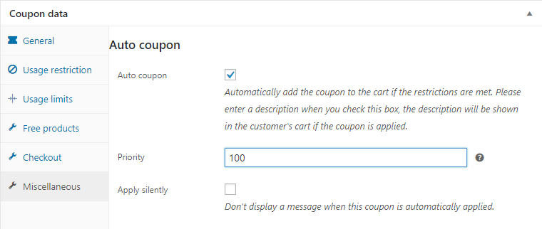
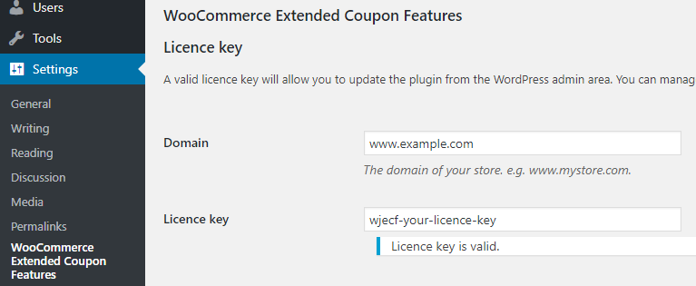

Editing coupons
WooCommerce Extended Coupon Features adds several tabs and fields to the WooCommerce Coupon Management pages.
Additional usage restrictions
Several features are added to the Usage Restriction-tab of the coupon edit page. Here extra rules can be configured that work in combination with the Products, Exclude products, Product categories and Exclude categories rules.

AND Products (not OR)
By default a coupon validates if only one of the selected products is in the cart. Check this box if ALL of the products entered on the Usage Restriction-tab must be in the cart to validate the coupon. The word 'OR' or 'AND' is displayed next to the 'Products'-field on the Usage Restriction-tab for clarification.
AND Categories (not OR)
By default a coupon validates if a product from any of the selected categories is in the cart. Check this box if products from ALL of the categories entered on the Usage Restriction-tab must be in the cart to validate the coupon. The word 'OR' or 'AND' is displayed next to the Products-field on the Usage Restriction-tab for clarification.
Minimum/maximum quantity of matching products
The coupon will only validate if the number of products matching the product or category restrictions (on the Usage Restriction-tab in the cart is within this range. If no product or category restriction is entered, the total quantity of all of the products in the cart will be used.
Minimum/maximum subtotal of matching products
The coupon will only validate if the total value of the products matching the product or category restrictions (on the Usage Restriction-tab in the cart is within this range. If no product or category restriction is entered, the total value of all of the products in the cart will be used.
Please note: The difference between this option and the 'minimum/maximum spend' on the 'General'-tab is that on the general tab the subtotal of all of the items in the cart is compared.
Discount on cart with excluded products (PRO Version Only)
This option is only visible if the discount type is Cart Discount or Cart % Discount.
By default, When the coupon is setup as a 'Cart Discount' it will never validate a coupon when an excluded product is in the cart (this is how WooCommerce Coupons work). By checking this box the coupon will still validate when an excluded product is in the cart. Useful for cart discounts based on a subtotal of matching products, but having some products or categories excluded.
Free products
In the 'Free products'-field on the 'Free products'-tab you can enter one or more products that will automatically be added to the cart when the coupon is applied. The product will automatically be removed when the coupon is no longer valid.
 Watch video
If you tick the 'select one'-checkbox, the customer must choose one (or more) of the selected products on the cart or checkout page. The customer can also choose the desired variations of a variable product. You can also edit the message that is displayed.

If you wish to change the look-and-feel of the product selection you must create a subdirectory woocommerce-auto-added-coupons-pro in your themes directory and copy and edit the files templates/cart/select-free-product.php and templates/checkout/select-free-product.php in here.
Multiplication of free products
When the box 'Allow multiplication of the free products' is checked the amount of free products will be multiplied every time the minimum spend, subtotal or quantity is reached. For example if the minimum spend is $ 50 and the user has $ 160 worth of products in the cart, the free products will be added 3 times to the cart.
Checkout
On the checkout-tab restrictions can be entered that will normally only be active when the customer initiates checkout.

Shipping methods
The coupon will only validate if the customer selects one of these shipping methods.
Payment methods
The coupon will only validate if the customer selects one of these payment methods.
Customer restrictions
Allowed customer
When you enter one or more customers here, the coupon will only validate if the customer is logged in and is in this list.
Allowed user roles
When you enter one or more user roles here, the coupon will only validate if the customer has one of these user roles (e.g. Wholesale buyer or Guest).
Disallowed user roles
The coupon will only validate if the customer does not have any of these user roles (e.g. Wholesale buyer or Guest).
Miscellaneous
Auto coupon

You can convert a coupon into a discount rule simply by ticking the "Auto coupon" checkbox on the 'miscellaneous'-tab. When using this option it is important to enter a description for the coupon, as this will be presented to the customer.
When this option is activated, the discount will automatically be applied to the cart when it's conditions are met and the description will be presented to the customer and on the cart page. Once the conditions are no longer met, for example when the customer removes an item from the cart, the discount will be removed from the cart.
Apply silently
When this box is checked, no 'Discount applied' notice will be presented when the coupon is applied.
Allow applying when invalid
(PRO Version Only)
When the box 'Allow applying when invalid' is ticked, a customer can always add the coupon to the cart, but will be presented with a message that the discount will only apply when the conditions are met.
NOTE: This option is not available for 'Auto coupons'.
Coupon by URL
Now you can easily create a link that will automatically apply a coupon to the user's cart, optionally in combination with a product.
Simply append ?apply_coupon=coupon_code to the url. If you also want to add products to the cart with the same url, you can use add-to-cart=product_id and optionally a quantity. You can find the id of a product on the WooCommerce Edit-page of the product.
Example:
(http://www.your-store.nl/cart/?add-to-cart=4321&quantity=3&apply_coupon=my_coupon)[#]
If the customer opens the url when the conditions of the coupon are not yet met or the cart is empty the coupon won't be applied yet, instead the following message will be displayed: Coupon will be applied once it's conditions are met. Once the conditions of the coupon are met it will be applied automatically.
Automatic updates
(PRO Version Only)
To receive automatic updates, you need to enter the licence key. NOTE: This is only possible if you purchased the plugin at soft79.nl.
Go to: wp-admin > Settings > WooCommerce Extended Coupon Features

Enter the domain and licence key. The licence will be automatically activated.
To deactivate a licence key for a domain (e.g. to move it to a different domain) just empty the fields and save the settings. The licence will automatically be deactivated for the domain and can be used on a different domain.
You can also manage you licence activations from your account page at soft79.nl.